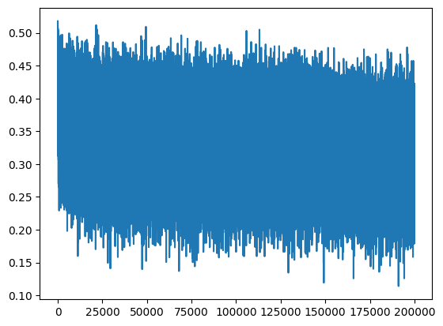
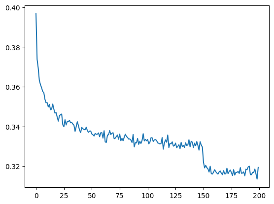
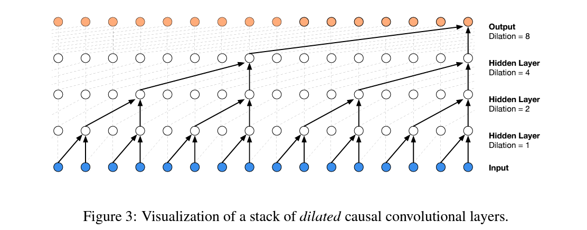

This is my study notes / codes along with Andrej Karpathy’s “Neural Networks: Zero to Hero” series.
Codes are executed in Colab, this calculation capacity exceeds my computer’s ability.
1 intro
We are going to take the 2-layer MLP in the part 3 of makemore and complexify it by:
- extending the block size: from 3 to 8 characters;
- making it deeper rather than 1 hidden layer.
then end of with a Convoluntional Neural Network architecture similar to WaveNet (2016) by Google DeepMind.

starter code walkthrough
import libraries
reading data
building vocab
Show the code
# build the vocabulary of characters and mapping to/from integer
chars = sorted(list(set(''.join(words))))
stoi = {s:i+1 for i, s in enumerate(chars)}
stoi['.'] = 0
itos = {i: s for s, i in stoi.items()}
vocab_size = len(itos)
print(itos)
print(vocab_size)
# itos: {1: 'a', 2: 'b', 3: 'c', 4: 'd', 5: 'e', 6: 'f', 7: 'g', 8: 'h', 9: 'i', 10: 'j',
# 11: 'k', 12: 'l', 13: 'm', 14: 'n', 15: 'o', 16: 'p', 17: 'q', 18: 'r', 19: 's', 20: 't',
# 21: 'u', 22: 'v', 23: 'w', 24: 'x', 25: 'y', 26: 'z', 0: '.'}
# vocab_size: 27initializing randomnization
create train/dev/test splits
Show the code
block_size = 3 # context length: how many characters do we take to predict the next one?
# build the dataset
def buid_dataset(words):
X, Y = [], []
for w in words:
context = [0] * block_size
for ch in w + '.':
ix = stoi[ch]
X.append(context)
Y.append(ix)
context = context[1:] + [ix]
X = torch.tensor(X)
Y = torch.tensor(Y)
print(X.shape, Y.shape)
return X, Y
n1 = int(0.8 * len(words))
n2 = int(0.9 * len(words))
Xtr, Ytr = buid_dataset(words[:n1]) # 80#
Xdev, Ydev = buid_dataset(words[n1:n2]) # 10%
Xte, Yte = buid_dataset(words[n2:]) # 10%
# torch.Size([182625, 3]) torch.Size([182625])
# torch.Size([22655, 3]) torch.Size([22655])
# torch.Size([22866, 3]) torch.Size([22866])input and response preview
initializing objects in networks
Near copy paste of the layers we have developed in Part 3, I added some docstring to the classes.
class Linear
Show the code
class Linear:
"""
Applies an affine linear transformation to the incoming data: y = xA^T + b.
This class implements a linear (fully connected) layer, which performs a linear
transformation on the input tensor. It is typically used in neural network architectures
to transform input features between layers.
Args:
fan_in (int): Number of input features (input dimension).
fan_out (int): Number of output features (output dimension).
bias (bool, optional): Whether to include a learnable bias term.
Defaults to True.
Attributes:
weight (torch.Tensor): Weight matrix of shape (fan_in, fan_out),
initialized using Kaiming initialization.
bias (torch.Tensor or None): Bias vector of shape (fan_out),
initialized to zeros if bias is True, otherwise None.
Methods:
__call__(x): Applies the linear transformation to the input tensor x.
parameters(): Returns a list of trainable parameters (weight and bias).
Example:
>>> layer = Linear(10, 5) # Creates a linear layer with 10 input features and 5 output features
>>> x = torch.randn(3, 10) # Input tensor with batch size 3 and 10 features
>>> output = layer(x) # Applies linear transformation
>>> output.shape
torch.Size([3, 5])
"""
def __init__(self, fan_in, fan_out, bias=True):
self.weight = torch.randn((fan_in, fan_out)) / fan_in**0.5 # note: kaiming init
self.bias = torch.zeros(fan_out) if bias else None
def __call__(self, x):
self.out = x @ self.weight
if self.bias is not None:
self.out += self.bias
return self.out
def parameters(self):
return [self.weight] + ([] if self.bias is None else [self.bias])class BatchNorm1d
Show the code
class BatchNorm1d:
"""
Applies Batch Normalization to the input tensor, a technique to improve
training stability and performance in deep neural networks.
Batch Normalization normalizes the input across the batch dimension,
reducing internal covariate shift and allowing higher learning rates.
This implementation supports both training and inference modes.
Args:
dim (int): Number of features or channels to be normalized.
eps (float, optional): A small constant added to the denominator for
numerical stability to prevent division by zero.
Defaults to 1e-5.
momentum (float, optional): Momentum for updating running mean and
variance during training. Controls the degree of exponential
moving average. Defaults to 0.1.
Attributes:
eps (float): Epsilon value for numerical stability.
momentum (float): Momentum for running statistics update.
training (bool): Indicates whether the layer is in training or inference mode.
gamma (torch.Tensor): Learnable scale parameter of shape (dim,).
beta (torch.Tensor): Learnable shift parameter of shape (dim,).
running_mean (torch.Tensor): Exponential moving average of batch means.
running_var (torch.Tensor): Exponential moving average of batch variances.
Methods:
__call__(x): Applies batch normalization to the input tensor.
parameters(): Returns learnable parameters (gamma and beta).
Key Normalization Steps:
1. Compute batch mean and variance (in training mode)
2. Normalize input by subtracting mean and dividing by standard deviation
3. Apply learnable scale (gamma) and shift (beta) parameters
4. Update running statistics during training
Example:
>>> batch_norm = BatchNorm1d(64) # For 64-channel input
>>> x = torch.randn(32, 64) # Batch of 32 samples with 64 features
>>> normalized_x = batch_norm(x) # Apply batch normalization
>>> normalized_x.shape
torch.Size([32, 64])
Note:
- Supports both 2D (batch, features) and 3D (batch, channels, sequence) input tensors
- During inference, uses running statistics instead of batch statistics
"""
def __init__(self, dim, eps=1e-5, momentum=0.1):
self.eps = eps
self.momentum = momentum
self.training = True
# parameters (trained with backprop)
self.gamma = torch.ones(dim)
self.beta = torch.zeros(dim)
# buffers (trained with a running 'momentum update')
self.running_mean = torch.zeros(dim)
self.running_var = torch.ones(dim)
def __call__(self, x):
# calculate the forward pass
if self.training:
xmean = x.mean(dim, keepdim=True) # batch mean
xvar = x.var(dim, keepdim=True) # batch variance
else:
xmean = self.running_mean
xvar = self.running_var
xhat = (x - xmean) / torch.sqrt(xvar + self.eps) # normalize to unit variance
self.out = self.gamma * xhat + self.beta
# update the buffers
if self.training:
with torch.no_grad():
self.running_mean = (1 - self.momentum) * self.running_mean + self.momentum * xmean
self.running_var = (1 - self.momentum) * self.running_var + self.momentum * xvar
return self.out
def parameters(self):
return [self.gamma, self.beta]class Tanh
Show the code
class Tanh:
"""
Hyperbolic Tangent (Tanh) Activation Function
Applies the hyperbolic tangent activation function element-wise to the input tensor.
Tanh maps input values to the range [-1, 1], providing a symmetric and non-linear
transformation that helps neural networks learn complex patterns.
Mathematical Definition:
tanh(x) = (e^x - e^-x) / (e^x + e^-x)
Key Characteristics:
- Output Range: [-1, 1]
- Symmetric around the origin
- Gradient is always less than 1, which helps mitigate the vanishing gradient problem
- Commonly used in recurrent neural networks and hidden layers
Methods:
__call__(x): Applies the Tanh activation to the input tensor.
parameters(): Returns an empty list, as Tanh has no learnable parameters.
Attributes:
out (torch.Tensor): Stores the output of the most recent forward pass.
Example:
>>> activation = Tanh()
>>> x = torch.tensor([-2.0, 0.0, 2.0])
>>> y = activation(x)
>>> y
tensor([-0.9640, 0.0000, 0.9640])
Note:
This implementation is stateless and does not modify the input tensor.
The activation is applied element-wise, preserving the input tensor's shape.
"""
def __call__(self, x):
self.out = torch.tanh(x)
return self.out
def parameters(self):
return []random number generator
network architecture
Show the code
# original network
n_embd = 10 # the dimensionality of the character embedding vectors
n_hidden = 200 # the number of neurons in the hidden layer of the MLP
C = torch.rand((vocab_size, n_embd))
layers = [
Linear(n_embd * block_size, n_hidden, bias=False),
BatchNorm1d(n_hidden),
Tanh(),
Linear(n_hidden, vocab_size),
]
# parameter init
with torch.no_grad():
layers[-1].weight *= 0.1 # last layer make less confident
parameters = [C] + [p for layer in layers for p in layer.parameters()]
print(sum(p.nelement() for p in parameters)) # number of parameters in total
for p in parameters:
p.requires_grad = True
# model params: 12097optimization
Show the code
# same optimization as last time
max_steps = 200000
batch_size = 32
lossi = []
for i in range(max_steps):
# minibatch construct
ix = torch.randint(0, Xtr.shape[0], (batch_size,))
Xb, Yb = Xtr[ix], Ytr[ix] # batch X,Y
# forward pass
emb = C[Xb] # embed the characters into vectors
x = emb.view(emb.shape[0], -1) # concatenate the vectors
for layer in layers:
x = layer(x)
loss = F.cross_entropy(x, Yb) # loss function
# backward pass
for p in parameters:
p.grad = None
loss.backward()
# update: simple SGD
lr = 0.1 if i < 150000 else 0.01 # step learning rate decay
for p in parameters:
p.data += -lr * p.grad
# track stats
if i % 10000 == 0: # print every once in a while
print(f'{i:7d}/{max_steps:7d}: {loss.item():.4f}')
lossi.append(loss.log10().item()) 0/ 200000: 3.2885
10000/ 200000: 2.3938
20000/ 200000: 2.1235
30000/ 200000: 1.9222
40000/ 200000: 2.2440
50000/ 200000: 2.1108
60000/ 200000: 2.0624
70000/ 200000: 2.0893
80000/ 200000: 2.4173
90000/ 200000: 1.9744
100000/ 200000: 2.0883
110000/ 200000: 2.4538
120000/ 200000: 1.9535
130000/ 200000: 1.8980
140000/ 200000: 2.1196
150000/ 200000: 2.3550
160000/ 200000: 2.2957
170000/ 200000: 2.0286
180000/ 200000: 2.2379
190000/ 200000: 2.3866observe training process/evaluation

lossi plot at the beginningcalibrate the batchnorm after training
We should be using the running mean/variance of the whole dataset splits rather than the last mini-batch.
calculate on whole training and validation splits
Show the code
# evaluate the loss
@torch.no_grad() # this decorator disables gradient tracking inside pytorch
def split_loss(split):
x,y = {
'train': (Xtr, Ytr),
'val': (Xdev, Ydev),
'test': (Xte, Yte),
}[split]
logits = model(x)
loss = F.cross_entropy(logits, y)
print(split, loss.item())
split_loss('train')
split_loss('val')Pretty loss but there are still room for improve:
sample from the model
Here are Names generated by the model till now, we have relatively name-like results that do not exist in the training set.
let’s fix the learning rate plot
The plot for lossi looks very crazy, it’s because the batch size of 32 is way too few so this time we got lucky, and next time we got un-lucky. And the mini-batch loss splashed too much. We should probaly fix it.
We pivot to a row for every 1000 observations of lossi and calculate the mean, we end up have 200 oversevation which is easier to see.
We can also observe the learning rate decay at 150k training loops.

lossi plot at the beginningpytorchifying our code: layers, containers, torch.nn, fun bugs
Now we notice that we still have the embedding operation lying outside the pytorch-ified layers. It basically creating a lookup table C, embedding it with our data Y (or Yb), then stretching out to row with view() which is very cheap in PyTorch as no more memory creation is needed.
We modulize this by constructing 2 classes:
Show the code
class Embedding:
def __init__(self, num_embeddings, embedding_dim):
self.weight = torch.randn((num_embeddings, embedding_dim))
def __call__(self, IX):
self.out = self.weight[IX]
return self.out
def parameters(self):
return [self.weight]
# -----------------------------------------------------------------------------------------------
class Flatten:
def __call__(self, x):
self.out = x.view(x.shape[0], -1)
return self.out
def parameters(self):
return []Now we can re-define the layers like this:
and also remove the C, emb definition in the forward pass construction. Going futher, we will be not only pytorchifying the elements of layers only, but also the layers itself. In PyTorch, we have term containers, which specifying how we organize the layers in a network. And what are we doing here is constructing layers sequentially, which is equivalent to Sequential in the containers:
Show the code
class Sequential:
def __init__(self, layers):
self.layers = layers
def __call__(self, x):
for layer in self.layers:
x = layer(x)
self.out = x
return self.out
def parameters(self):
# get parameters of all layers and stretch them out into one list
return [p for layer in self.layers for p in layer.parameters()]and wrapp the layers into our model:
2 implementing WaveNet
So far with the classical MLP following Bengio et al. (2003), we have a embedding layer followed by a hidden layer and end up with a activation layer. Although we added more layer after the embedding, we could not make a significant progress.
The problem is we dont have a naive way of making the model bigger in a productive way. We are still in the case that we crushing all the characters into a single all the way at the begining. And even if we make this a bigger layer and add neurons it’s still like silly to squash all that information so fast into a single step.
overview: WaveNet

WaveNet idea - Progressive Fusiondataset bump the context size to 8
first we change the block_size into 8 and now our dataset looks like:
........ ---> y
.......y ---> u
......yu ---> h
.....yuh ---> e
....yuhe ---> n
...yuhen ---> g
..yuheng ---> .
........ ---> d
.......d ---> i
......di ---> o
.....dio ---> n
....dion ---> d
...diond ---> r
..diondr ---> e
.diondre ---> .
........ ---> x
.......x ---> a
......xa ---> v
.....xav ---> i
....xavi ---> eThe model size now bumps to 22k.
re-running baseline code on block_size 8
implementing WaveNet
training the WaveNet: first pass
fixing batchnorm1d bug
re-training WaveNet with bug fix
scaling up our WaveNet
3 conclusions
performance log
| Step | What we did | Loss we got (accum) |
|---|---|---|
| 1 | original (3 character context + 200 hidden neurons, 12K params) | train 2.0467958450317383 |
| val 2.0989298820495605 | ||
| 2 | context: 3 -> 8 (22K params) | |
| 3 | flat -> hierarchical (22K params) | |
| 4 | fix bug in batchnorm | |
| 5 | scale up the network: n_embd 24, n_hidden 128 (76K params) |
experimental harness
WaveNet but with “dilated causal convolutions”
torch.nn
the development process of building deep neural nets
going forward
improve on my loss! how far can we improve a WaveNet on this data?
4 resources
- WaveNet 2016 from DeepMind: https://arxiv.org/abs/1609.03499;
- Bengio et al. 2003 MLP LM: https://www.jmlr.org/papers/volume3/bengio03a/bengio03a.pdf;
- Notebook: https://github.com/karpathy/nn-zero-to-hero/blob/master/lectures/makemore/makemore_part5_cnn1.ipynb;
- DeepMind’s blog post from 2016: https://deepmind.google/discover/blog/wavenet-a-generative-model-for-raw-audio/